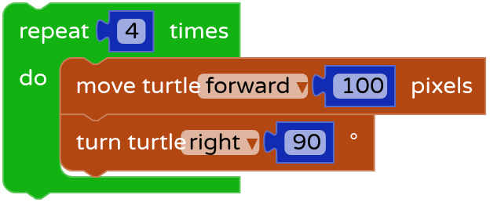

Rover patrol with loops
Send the rover around a square. The rover starts at the landing pad facing right. Each side is 100 pixels long, and each corner needs a 90° turn.
Put the move and turn inside a repeat block

Each trip through the repeat block gives the rover one straight move and one right turn. How many trips will it take to get home?
Run the patrol
GDScript
for side in range(4):
forward(100)
turn_right(90)Rover map
Beacons turn green when the rover stops on them.
At the landing pad. Facing right. 0 of 3 beacons reached.
Read the loop
range(4) gives side the values 0, 1, 2, and 3 in that order. For each value, the rover runs both indented commands. The indentation does the same job as snapping both blocks inside the Blockly repeat block.
After four moves the rover is back at (0, 0). The last turn makes it face right again, ready to repeat the patrol.
Change the patrol
- Change
range(4)torange(3). Predict where the rover will stop, then run it. - Put the count back to four. Change
forward(100)toforward(60). Does the rover still get home? How does the trail change? - Keep the 60-pixel moves. Try three repeats and a 120° turn to make a triangle.
Check your predictions
Three 100-pixel moves and 90° turns leave the rover at (0, 100), facing up. Four 60-pixel moves trace a smaller square and return to (0, 0). Three 120° turns add up to a full turn, and three equal moves trace a triangle that also returns to the pad.